bienvenida
Hola, Bienvenidos a MataCenteno tu sitio web del fútbol
mundial.
Espero que tu visita a ésta plataforma sea de lo más
placentera y
quiero que sepas que siempre seras bienvenido
#7FFFD4
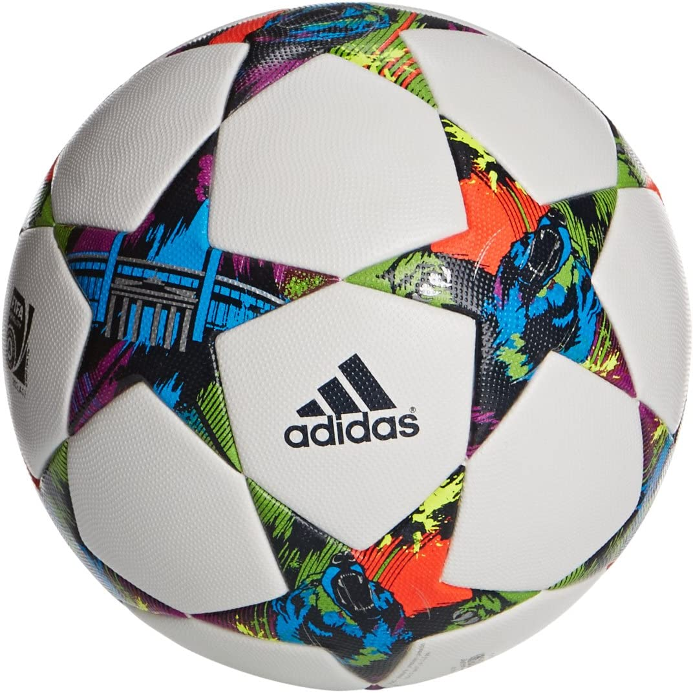
Noticias
Alves sale en libertad y aqui te diremos quien pago la fianza
Guardiola acepta el empate contra el Arsenal

Con gol del pistolero el Miami empata

Murillo: Nuevo refuerzo del Deportivo Tachira
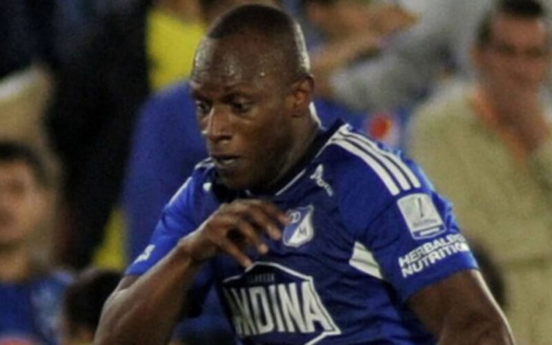
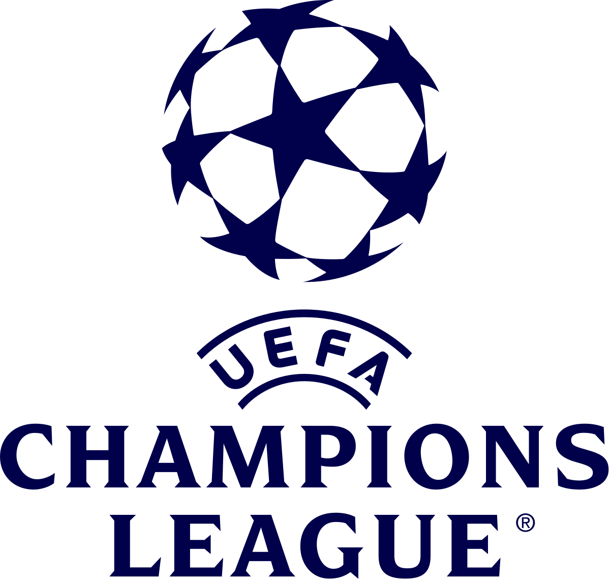
Partidos para la semana del 13 y 14/02/2024 y
semana del 20 y 21/02/2024
Resultados de partidos de ida del Martes 13/02:
- RB Leipzig 0 vs Real Madrid CF 1
- FC Copenhague 1 vs Manchester City FC 3
Resultados de los partidos de ida del Miercoles 14/02:
- Lazio 1 vs Bayern Munich 0
- PSG FC 2 vs Real Sociedad 0
Resultados de los partidos de ida de octavos del martes 20/02/2024:
- PSV Eindhoven 1 vs Borussia Dortmund 1
- Inter Milan 1 vs Atletico de Madrid 0
Resultados de los partidos de ida de octavos del miercoles 21/02/2024:
- SSC Napoles 1 vs FC Barcelona 1
- FC Oporto 1 vs Arsenal 0
Resulatdos de los partidos de vuelta de octavos de final para el martes 05/03/2024
- Bayern Munich 3 vs 0 Lazio
- Real Sociedad 1 vs 2 PSG
Resultados de los partidos de vuelta de octavos de final para el miercoles 06/03/2024
- Real Madrid CF 1 vs 1 RB Leipzig
- Manchester City FC 3 vs 1 FC Copenhague
Resultados de los partidos de vuelta de octavos para el martes 12/03/2024:
- Arsenal 1 (4)vs(3) 0 Porto
- Barcelona 3 vs 1 Napoli
Resultados de los partidos de vuelta de octavos para el miercoles 13/03/2024:
- Borussia Dortmund 2 vs 0 PSV
- Atletico de Madrid 2 (3)vs(2) 1 Inter de Milan
Partido de Champions del martes 12/03/2024:
Barcelona vs Napoli, partidazo del equipo cule. La primera media hora de partido fue del Barca que con un ataque comandado por Jamal, Fermin, Raphiña y Joao Cancelo se ponia 2 a 0 el partido. El Barcelona fue claro dominador del encuentro en el primer tiempo, fue avasallante el ataque blaugrana y con la aficion acompañando al equipo. Luego el Napoles empata el partido ya casi para terminar el primer tiempo y deja con un sabor no muy dulce a la aficion cule. En el segundo tiempo el Napoles por instantes metio atras al Barcelona, pero con unos cambios en la medular, colocando a Sergi Roberto y a Romeu, le daba frescura al medio campo y con pases largos y precisos de Cubarsi, el Barcelona volvia al ataque y con una jugada por la izquierda con Joao Cancelo que se la pasa a Gundogan y este pone un pase en profundidad a Sergi y este le da un toque a Lewa y este que solo empuja el balon y adentro, Barcelona 3 Napoles 1 y eso fue todo para el Napoles. El Barcelona siguio atacando y bueno la aficion estaba que se salia de la alegria. En resumen, un gran Barca, con un gran Cubarsi, gran Lamine Yamal, gran Joao Cancelo y grande Raphiña y bueno todo el equipo blaugrana estuvieron fenomenal. Ahora con este equipo jugando de esta manera, no podemos dejar que Xavi se vaya, pienso que sigue siendo el mas idoneo para dirigir este plantel. Todas las malas actuaciones que ha tenido el equipo se han debido a las lesiones de jugadores titulares del Barcelona y pienso que el que apesar de los lesionados, el Barca pase a cuartos es una gran victoria que tiene pegado el nombre de Xavi Hernandez
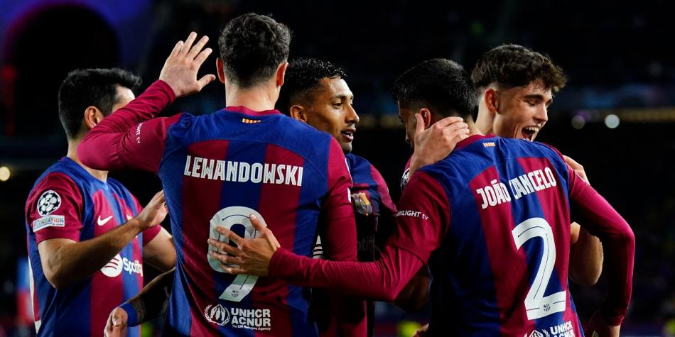
Partido de Champions del miercoles 13/03/2024:
Atletico de Madrid vs Inter de Milan, partido de vuelta de los octavos de final de la Champions de esta temporada, partido jugado en el Wanda Metropolitano de la ciudad de Madrid. Fue todo un espectaculo, ya que el Atletico salio a comerse el partido y el Inter saliendo de contra, esta fue la tonica de todo el partido. El Inter con gol de Dimarco se ponia 1 a 0, en el global 2 a 0 pero el equipo colchonero reacciono con gol de Griezman, y asi termino el primer tiempo. Luego en el segundo tiempo, el Inter tuvo en los botines de Thuram la de cerrar el partido, pero el frances no estuvo fino esta tarde. Con jugada de Riquelme que ingreso en el segundo tiempo y pase a Depay para que este disparara al arco y se iba arriba el Atletico 2 a 1 el encuentro y se empataba la serie 2 a 2. Ingreso Alexis Sanchez por el Inter y bueno fue muy tarde, al chileno tuvieron que haberlo metido antes, ya que era el jugador que distribuia balon y hacia que el Inter tuviera mayor posesion. Bueno pasaron los dos tiempos complementarios y llegamos a los penales, donde por el Inter le pararon el penal a Alexis y a Lautaro, asi que el equipo madrileño pasa a cuartos de final y va al sorteo de cuartos este viernes

Europa League
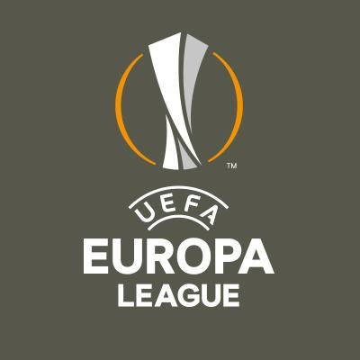
En este mes de febrero se jugaran los partidos de play offs, donde
se enfrentaran los 8 equipos que quedaron de subcampeones de cada
grupo de la fase de grupos de esta competicion contra los 8
equipos que quedaron terceros en la fase de grupos de la Champions
de esta temporada
Como goleador de la competicion tenemos a Joao Pedro del Brighton
con 6 goles y como mejor asistidor a Kostas Fortounis del Olympiakos
con 6 asistencias
Los resultados de los partidos de ida de Play Offs de este jueves 15/02 son los siguientes:
- FC Shakhtar Donetsk 2 vs Olympique Marsella 2
- Young Boys 1 vs Sporting Portugal 3
- Galatasary SK 3 vs AC Sparta Praga 2
- Feyenoord Rotterdam 1 vs AS Roma 1
- SC Braga 2 vs Qarabag FK 4
- AC Milan 3 vs FC Stade Rennes 0
- RC Lens 0 vs SC Friburgo 0
- Benfica 2 vs Toulouse FC 1
Resultados de los partidos de Playoffs del jueves 22/02
- Qarabag FK 2 vs SC Braga 3
- SC Friburgo 3 vs RC Lens 2
- Toulouse FC 0 vs Benfica 0
- FC Stade Rennes 3 vs AC Milan 2
- Olympique Marsella 3 vs FC Shakhtar Donetsk 1
- Sporting Portugal 1 vs Young Boys 1
- AC Sparta Praga 4 vs Galatasary SK 1
- AS Roma 1 (4) vs Feyenoord Rotterdam 1 (2)
Total de equipos que van a octavos en la Europa League:
- Westham, Brighton, Rangers, Atalanta, Liverpool, Villarreal, Slavia Praga, Bayern Leverkusen
- Milan, Friburgo, Benfica, Qarabaq, Marsella, Sporting CP, Sparta de Praga, Roma
Fecha de sorteo de los octavos de final de la Europa League:
El sorteo para octavos de final de esta temporada sera este viernes 23/02 en Suiza
aproximadamente a las 7:00 de la mañana hora venezolana
Resultados de los partidos de octavos de final de la Europa League 23/24 de este jueves 07/03/2024:
- SP Portugal 1 vs 1 Atalanta
- FK Qarabag 2 vs 2 Bayern Leverkusen
- Roma 4 vs 0 Brighton
- S. Praga 1 vs 5 Liverpool
- Benfica 2 vs 2 Rangers
- Marsella 4 vs 0 Villarreal
- Milan 4 vs 2 Slavia P.
- Friburgo 1 vs 0 West Ham
Resultados de los partidos de vuelta de octavos para este jueves 14/03/2024:
- Slavia Praga 1 vs 3 Milan
- West Ham 5 vs 0 Friburgo
- Villarreal 3 vs 1 Marsella
- Rangers 0 vs 1 Benfica
- Atalanta 2 vs 1 SP Portugal
- Bayern Leverkusen 3 vs 2 FK Qarabaq
- Brighton 1 vs 0 AS Roma
- Liverpool 6 vs 1 S. Praga
Opinion
Liverpool vs Brighton, partido de este domingo. Un partido donde se vio la garra red donde los de Klopp no se vinieron abajo despues del gol de Wellbeck sino que hicieron de las suyas y metieron al Brighton contra su propia arqueria y a la media hora de partido, un inquieto Luis Diaz metio su decimo quinto gol de esta temporada y el que iba a significar el del empate para el Liverpool. Luego en el segundo tiempo, igual el Liverpool lo dominaba al Brighton y cuando Pascal Gross perdio de vista a Alexis McAlister, este hizo un soberano pase en profundidad hacia el area y Salah, el egipcio goleador, marco la de irse arriba y los reds pasaban a ganar el encuentro. Luego, el Brighton estuvo cerca de empatarlo con varias ocasiones pero para fortuna del Liverpool no se dio y los de Merciside ganaron el encuentro y con el empate entre City y Arsenal, el Liverpool quedo como unico punta de la Premier y solo depende de si mismos para ganar el campeonato
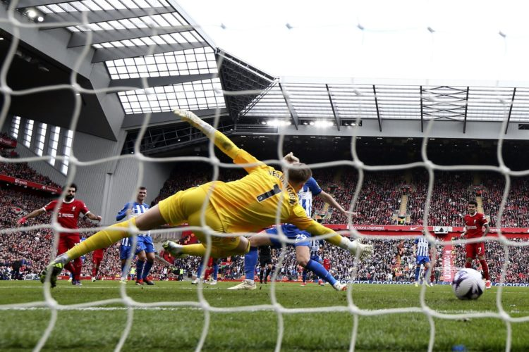
Copa Libertadores

Resultados de los partidos de la fase preliminar para este martes 05/03/2024:
- Nacional 0 vs 2 Palestino
Resultados de los partidos de la fase preliminar para este miercoles 06/03/2024:
- Botafogo 2 vs 1 Bragantino
- Sportivo Trinidense 1 vs 1 Colo Colo
Resultados de los partidos de la fase preliminar para este jueves 07/03/2024:
- Always Ready 1 vs 0 Nacional de Uruguay
Resultados de partidos de vuelta de la fase preliminar de la semana 12 al 14/03/2024:
- Colo Colo 2 vs 1 Sportivo Trinidense
- Bragantino 1 vs 1 Botafogo
- Palestino 1 (3)vs(1) 3 Nacional
- Nacional 2 (5)vs(4) 1 Always Ready
La fase de grupos de la Conmebol Libertadores comenzara en la semana del miercoles 03/04/2024
Sudamericana
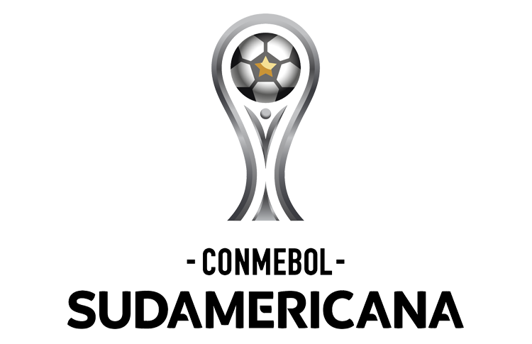
Resultados de los partidos de fase preliminar para este martes 05/03/2024:
- U. Catolica 0 vs 2 Coquimbo Unido
- Real Tomayapo 0(4)vs 0(3)Wilstermann
- Deportivo Garcilaso 0(4) vs 0(3) ADT
- Carabobo 1(4) vs 1(5) Metropolitanos FC
- Tolima 0(2) vs 0(4) Medellin
Resultados de los partidos de la fase preliminar para este miercoles 06/03/2024:
- Universitario de Vinto 0 vs 2 Nacional Potosi
- Everton 0 vs 1 U. La Calera
- Dep. Cuenca 2 vs 5 Delfin
- Wanderers 0 vs 1 Danubio
- Guarani 0 vs 1 Sportivo Luqueño
- Alianza Petrolera 2 vs 1 America
Resultados de los partidos de la fase preliminar para este jueves 07/03/2024:
- Racing 2 vs 0 Cerro Largo
- Rayo Zuliano 0(4) vs 0(2) Dep. La Guaira
- Cesar Vallejo 2 vs 0 Sport Huancayo
- Sportivo Ameliano 2 vs 0 Olimpia
- Tecnico Universitario 0 vs 3 U. Catolica
La fase de grupos de la Conmebol Sudamericana 2024 comenzara el 03/04/2024
Partido: Carabobo vs Metropolitanos
Partido de mucha intensidad ya que se jugaba el pase a fase de grupos de la Sudamericana A los 7 minutos del primer tiempo, Metropolitanos se iba arriba 1 a 0 con un golazo de Charlis Ortiz, quien despues de un pase largo burla a los centrales granate y mete el unico gol de Metropolitanos en el partido. Fue muy interrumpido por faltas y fueras de juego y saques de banda pero de mucha intensidad. Carabobo iba ganando protagonismo en el partido hasta que en el segundo tiempo, Graterol coge el balon con las manos para que el Carabobo no anotara y fue expulsado y penal para el granate. 1 a 1 se empataba el encuentro, que a pesar de que Metropolitanos tenia un jugador menos, se fue al ataque y con cambios de ultimo minuto llego a tener sus oportunidades y encerro a los Carabobeños en su area. Luego nos fuimos a los penales, donde Billete, portero de Metropolitanos, atajo el penal de Apaloza, para que el jugador de Metropolitanos metiera el quinto penal y los capitalinos se quedaban con la victoria y van directos a la fase de grupos cuyo sorteo es el lunes 18 de marzo
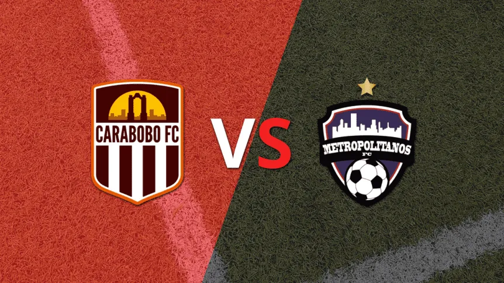
Partidos
Partidos del viernes 22/03/2024
Hora 12:00 hora venezolana: Nigeria vs Ghana
Hora 13:00 hora venezolana: Noruega vs Republica Checa
Hora 15:30 hora venezolana: Senegal vs Gabon
Hora 15:45 hora venezolana: Paises Bajos vs Escocia
Hora 15:45 hora venezolana: Hungria vs Turquia
Hora 15:45 hora venezolana: Albania vs Chile
Hora 15:45 hora venezolana: Rumania vs Irlanda del Norte
Hora 16:00 hora venezolana: Egipto vs Nueva Zelanda
Hora 16:30 hora venezolana: España vs Colombia
Hora 17:00 hora venezolana: Argelia vs Bolivia
Hora 20:00 hora venezolana: Argentina vs El Salvador
Hora 21:30 hora venezolana: Peru vs Nicaragua
Hora 19:00 hora venezolana: UCV vs Portuguesa
Partidos del Sabado 23/03/2024
Hora 13:00 hora venezolana: Eslovaquia vs Austria
Hora 15:00 hora venezolana: Dinamarca vs Suiza
Hora 13:00 hora venezolana: Irlanda vs Belgica
Hora 15:00 hora venezolana: Inglaterra vs Brasil
Hora 16:00 hora venezolana: Tunez vs Croacia
Hora 16:00 hora venezolana: Francia vs Alemania
Hora 16:00 hora venezolana: Metropolitanos vs Rayo Zuliano
Hora 19:00 hora venezolana: Carabobo vs Estudiantes de Merida
Partidos del Domingo 24/03/2024
Hora 16:00 hora venezolana: Ecuador vs Italia
Hora 18:00 hora venezolana: Guatemala vs Venezuela
Hora 15:00 hora venezolana: Dep. La Guaira vs Zamora
Hora 17:00 hora venezolana: Monagas vs Caracas
Hora 18:00 hora venezolana: Inter vs Deportivo Tachira
Partidos del lunes 01/04/2024
Hora 12:00 hora venezolana: US Lecce vs AS Roma
Hora 14:45 hora venezolana: Inter de Milan vs Empoli
Hora 15:00 hora venezolana: Villarreal vs Atletico de Madrid
Partidos del martes 02/04/2024
Hora 14:30 hora venezolana: Nottingham Forest vs FC Fulham
Hora 14:30 hora venezolana: Newcastle United vs Everton
Hora 15:15 hora venezolana: West Ham United vs Tottenham Hottspur
Hora 15:00 hora venezolana: Juventus vs Lazio
Partidos del miercoles 03/04/2024
Hora 14:30 hora venezolana: FC Arsenal vs Luton Town
Hora 14:30 hora venezolana: Brentford vs Brighton & Hove Albion FC
Hora 15:15 hora venezolana: Manchester City vs Aston Villa
Hora 15:10 hora venezolana: PSG vs Rennes
Hora 15:00 hora venezolana: Fiorentina vs Atalanta
Partidos del jueves 04/04/2024
Hora 14:30 hora venezolana: Liverpool vs Sheffield United FC
Hora 14:00 hora venezolana: Granada vs Valencia
Hora 15:15 hora venezolana: Chelsea vs Manchester United
En la lupa
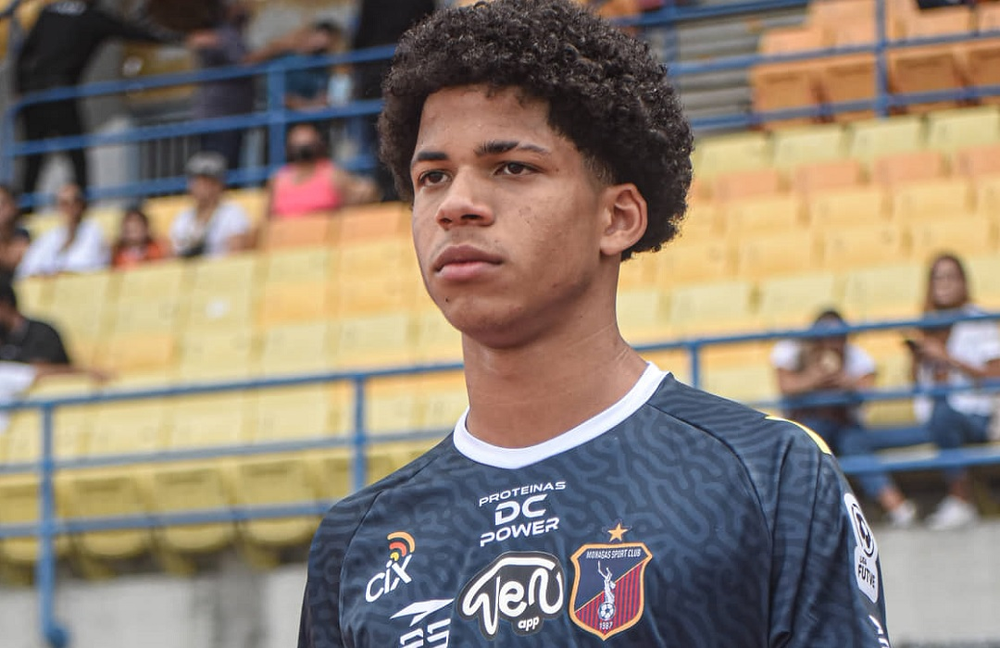
David Martinez, venezolano, nacido en El Tigre, estado Anzoategui Venezuela el 07/02/2006, es decir tiene 18 años. Le dicen la joya. Su posicion es la de medio ofensivo y tambien juega como extremo derecho. Es un jugador de buen pie, un numero 10 de esos que se estan extinguiendo y ademas tiene buen disparo de media distancia, es un jugador muy ofensivo con mucho gol y que cualquier equipo en el mundo quisiera tener. En el 2022 debuta en primera de la liga venezolana con el Monagas FC y con ese mismo equipo bate el record de ser el jugador venezolano mas joven en anotar un gol en copa Libertadores, eso fue contra Deportivo Pereira, donde el equipo venezolano pierde 2 goles a 1. Actualmente esta jugando para Los Angeles FC equipo de la MLS desde febrero del 2024, y por ahora no lleva goles anotados. En el 2022 con el Monagas en 28 apariciones anoto 4 goles y hizo una asistencia y, en el 2023 con el mismo equipo en 11 apariciones anoto 2 goles e hizo 3 asistencias. Lidero a la vinotinto del preolimpico 2024 y la llevo a estar en el cuadrangular final y a ganarle a un historico como Brasil y empatar contra Argentina. Es un lider nato dentro del campo ya que se echa el equipo al hombro y pelea todas las pelotas divididas. Su valor de mercado es de 1.5 millones de euros, nada por un jugadorazo como este venezolano, un muchacho que espero que los DTS tanto de Los Angeles y de la vinotinto sepan llevar y le deseo que coseche muchos frutos en su larga carrera
Futbolistas del ayer
Carlos Alberto Valderrama Palacio mejor conocido como el pibe Valderrama nacio el 02 de
septiembre de 1961 en Santa Marta, Colombia. Se inicio en el mundo del futbol jugando para
Deportivo Cali. Luego jugo para el Montpellier en la liga francesa, el Valladolid de España
para despues retornar al continente americano para jugar en el Tampa Bay de la liga de USA
Tuvo un papel muy importante en la era de oro del futbol colombiano en la decada de los 90
Gracias a sus excelentes capacidades para pasar el balon y su habilidad para el regate, este
centrocampista colombiano gano en dos ocasiones el Balon de Oro como mejor jugador americano y
en tres ocasiones gano premio como mejor jugador colombiano
Entre 1985 y 1998 en 111 partidos represento a la seleccion de Colombia, marcando 11 goles y
siendo capitan por 11 años. Jugo 5 ediciones de la Copa America y 3 ediciones de la Copa del
Mundo. En la seleccion tuvo de compañeros a Freddy Rincon, Rene Higuita, Tren Valencia y
Faustino Asprilla
En el 2004 fue incluido en los FIFA 100, que eran los 100 jugadores top escogidos por Pele
y fue el primer colombiano en ingresar al Salon de la Fama del Futbol en el 2014 en Pachuca,
Mexico
Actualmente, El Pibe sigue ligado al futbol, ya que siempre sube resumenes, comentarios y
noticias del futbol colombiano y mundial en su canal de Youtube.

 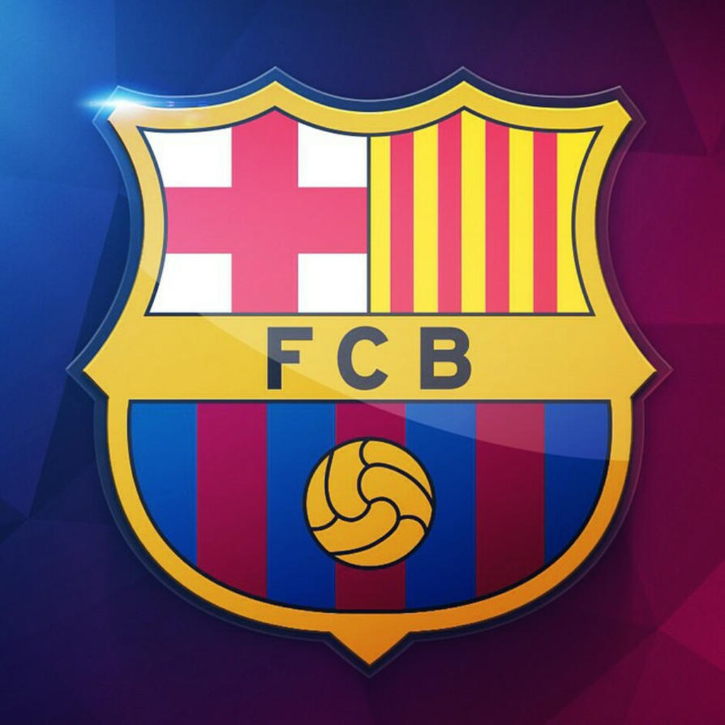
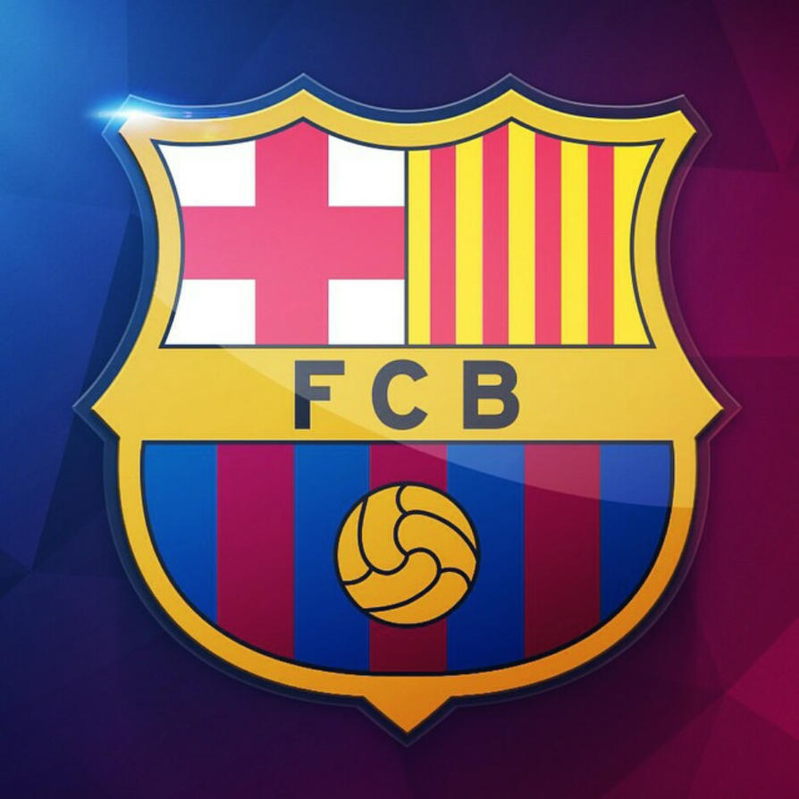